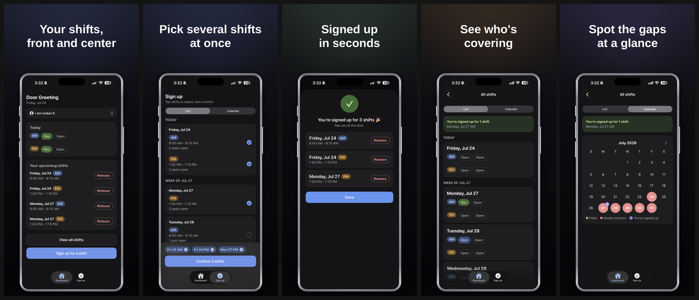
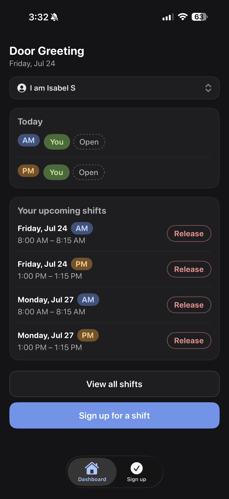
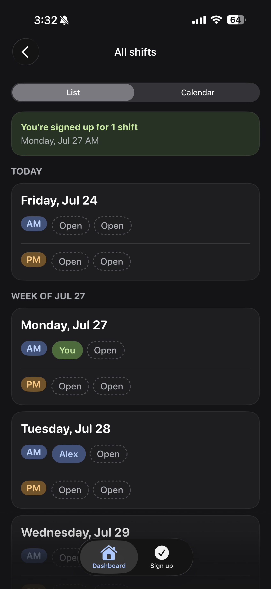
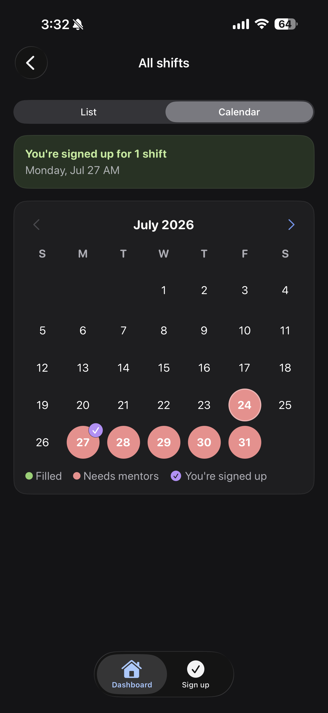
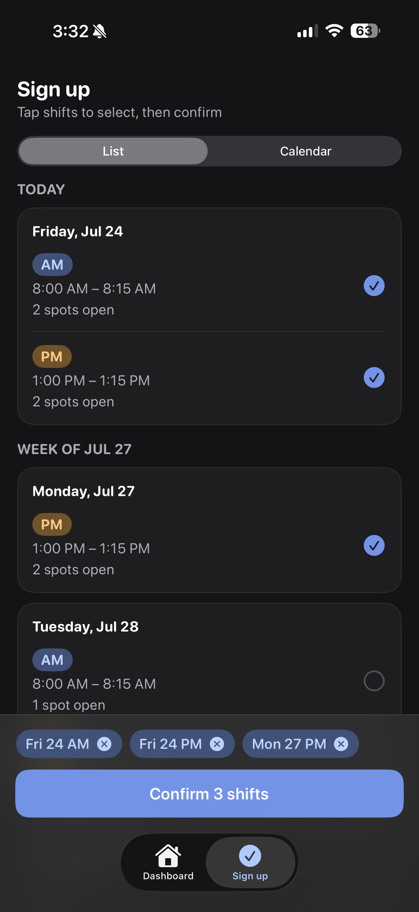
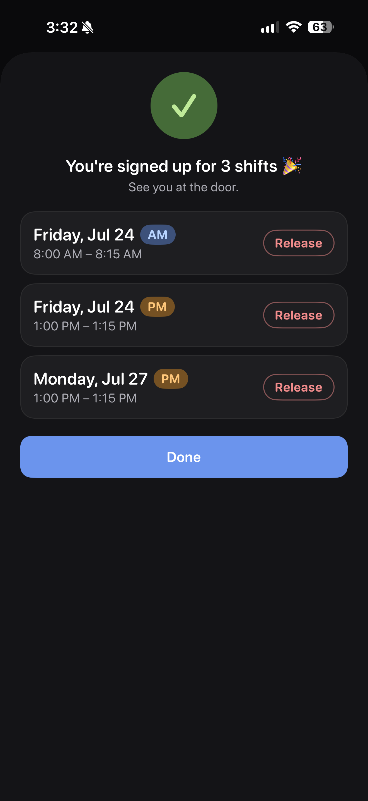

02 · Internal tool
A quick mobile way for the mentor team at the Apple Developer Academy to sign up for shifts greeting students at the door, replacing software that lost their answers and a reminder system that was one person's memory.

I was a mentor on this team, which meant the research started before the project did. I had personally missed shifts. I had watched the sign up sheet fail to save. The people I needed to talk to sat next to me.
Rather than recruit participants, I paid attention to the failure as it kept happening: who forgot, when they forgot, and what they were doing at the moment they were supposed to be at the door. Almost every miss traced back to the same thing: the shift was agreed to days earlier and never surfaced again until it was already missed.
Academy mentors signed up for door greeting shifts in an outdated piece of software that bugged and didn't save correctly. Sign ups disappeared. Mentors who had committed showed up in no record at all.
The second failure was quieter and worse. Many mentors forgot about their shifts entirely until someone else reminded them, and that someone was always the same person, manually looking up the schedule and chasing people down. The whole system ran on one person's memory and goodwill. If they were busy, or out, or simply tired of nagging, the door went unattended and students walked into an empty lobby.
The schedule wasn't broken because people didn't care. It was broken because caring had to be repeated by one person, every single day.
So the design problem wasn't "build a better sign up form." It was: how do you get a commitment to remind you of itself? Every decision below is an answer to that.
There were no external constraints on this project, no brand to match, no legacy system to integrate with. The constraint was attention. A mentor opening this app is between other things: walking in, mid conversation, about to start a session. Anything that took more than a few seconds would lose to whatever else they were doing.
That pushed the concept away from a scheduling tool and toward something closer to a glance. One screen that answers "am I on today?" before you've finished looking at it, and a sign up flow short enough to finish standing up.
This is the decision that replaced a person. The reminder had to fire close enough to the shift to be actionable, but far enough out to let someone wrap up what they were doing and walk over. Thirty minutes is the window where a reminder is still useful instead of just an accusation. Every mentor gets their own, so no one is responsible for anyone else's memory.
The home screen opens on today, your AM and PM slots, whether you're on them, and what's still open. Below it, your upcoming shifts, each with a Release button sitting right there. Dropping a shift is deliberately as easy as taking one: if releasing is hard, people don't release, they just don't show up, and an unreleased no show is worse than an empty slot someone else could have filled.
Most scheduling tools show you your own commitments. This one shows the team's coverage: green for filled, red for needs mentors, a check for days you're on. It turns sign up from an administrative task into a visible gap someone can close. You can see the holes in the month, which is the whole reason anyone signs up for an extra one.



Testing with mentors produced three additions, and all three came from the same root complaint: the app was accurate but it wasn't reassuring. People finished a task and didn't trust that it had worked, a direct hangover from the old software that silently lost sign ups.
Added after mentors signed up and immediately went looking for proof. "You're signed up for 3 shifts" with the list spelled out, and a release option on each, confirmation and correction in the same moment.
Mentors weren't taking one shift, they were taking their week. Doing that one at a time meant repeating the same flow four times. Now you tap everything you want, see it collected in a tray at the bottom, and confirm once.
The list view answered "what's open this week." Mentors kept asking a different question, "which days still need people", and scrolling a list to find out. The calendar was added so that answer fits on one screen.


The app shipped and is in use by the mentor team. Mentors remember their shifts because the notification tells them. Signing up is quick enough that people do it without being asked.
The measure I care about most: weeks have been filling completely, with no shifts left open, and nobody is chasing anyone to make that happen. The reminding job that used to belong to one person now belongs to the system.
0
Shifts left unfilled since launch
30min
Reminder window, sent to every mentor individually
1
Tap to confirm an entire week of shifts
Next project
What Dat Is? →